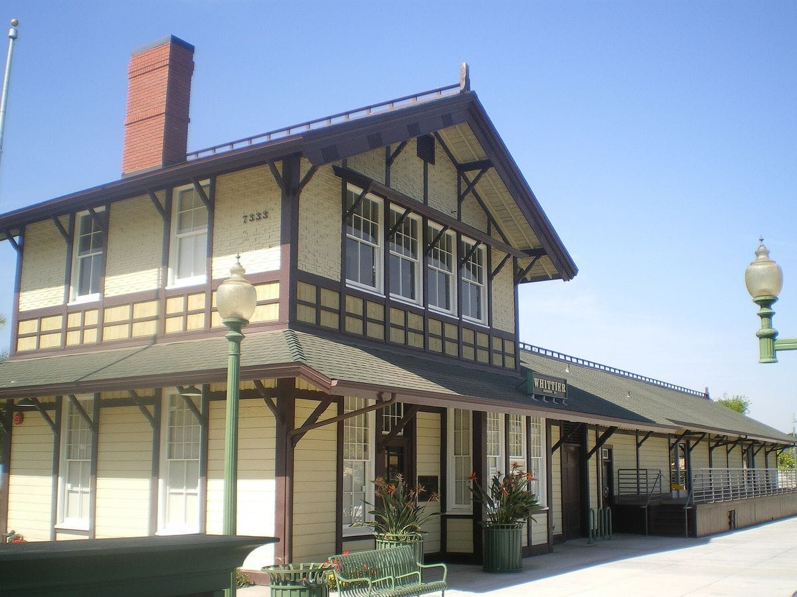

Appliance Repair in Whittier, CA
Serving Whittier across ZIP codes 90601–90606, including the unincorporated communities that share them. Same-day appointments when the schedule is open, fully licensed and insured.
5.0 · 160 Google reviewsMon–Sat, 8am–7pm. Two-hour arrival window. The technician calls before arriving.
See neighborhoods and ZIP codes

What to expect
- Flat $99 diagnostic feeApplied toward the repair if you approve the work.
- Written quote firstItemized, before any work starts.
- 90-day parts, 30-day laborWarranty on every repair.
- Same-day serviceCall or request online.
Family-owned since 2017 · Licensed, bonded & insured
What Our Customers Say
From our 160 verified 5-star Google reviews
Excellent service! The technician received the part and came to fix my washer immediately. He was professional, knowledgeable and kind. Fair pricing and great communication throughout the process. Highly recommend!
AG is fantastic. Great communication, reliable, on time, friendly, helpful. All around the best appliance repair guy you could ask for. I will 100% use him again the next time I need a repair.
Did the job perfectly when another company said it could not be done. Made sure the area was cleaner when he finished than when he arrived. Thank you.
Services We Offer in Whittier
Pick the appliance that is giving you trouble to see its full guide, with common symptoms and the brands we support.
Request
Call (949) 629-5365 or fill in the online form. Tell us the appliance, the brand, and what it is doing.Diagnose
Your technician arrives in the scheduled window and tests the appliance to pin down the actual fault.Quote
You get a clear quote before any work begins, with no surprise add-ons. Whether to proceed is your call.Repair + Warranty
Most repairs finish in a single visit, and the work is backed by a 90-day parts and 30-day labor warranty.
Whittier Repair Pricing
One flat $99 diagnostic fee covers the visit anywhere we serve in Whittier, and it comes off the repair bill if you go ahead with the work. Seniors 60+ and repeat customers get 20% off labor.
Estimates vary by brand, part availability, and diagnosis. Final quote is provided before repair. Full pricing guide
Whittier Neighborhoods We Serve
Whittier has six standard mailing ZIP codes, 90601 through 90606, and they do not trace the city boundary. They spill into unincorporated parts of Los Angeles County, so a Whittier mailing address is not always a Whittier city address. That makes no difference to us. We serve the city and the unincorporated communities alike, and the names below are the ones you are most likely to know your area by.
-
Uptown Whittier
Historic business districtThe historic central business district and the streets around it. Every address here gets the same visit and the same $99 fee.
-
College Hills
Residential areaA residential area. When an older machine needs one part rather than a replacement, we say so at the quote.
-
Hadley-Greenleaf & Central Park
Residential areaTwo named residential areas. Whatever is in the kitchen, from a standard refrigerator to a remodel with built-ins, we work on it.
-
Friendly Hills
Residential areaA residential area. We repair built-in refrigerators, double ovens, and wine coolers as well as everyday washer and dryer pairs.
-
East Whittier
City and unincorporatedPart of East Whittier sits inside the city and part sits in unincorporated Los Angeles County. We cover both sides, so you do not need to know which one you live on.
-
South Whittier & West Whittier / Los Nietos
Unincorporated communitiesUnincorporated communities that share Whittier ZIP codes. We serve these addresses the same way we serve the city itself, with the same fee and the same 90-day parts / 30-day labor warranty.
About Whittier
Whittier was incorporated in 1898 and counted 87,306 residents in the 2020 Census. Uptown Whittier remains the historic center of town, and Whittier College, founded by Quakers, anchors the neighborhoods around it. The Whittier Greenway Trail, a former rail corridor, now runs through the city as a walking and biking path. Whittier shares borders with Pico Rivera, La Habra, Santa Fe Springs, and La Habra Heights, with unincorporated Hacienda Heights close by. Nearby Montebello is on our service list too. We repair appliances across the whole range, from a basic dryer to a premium built-in.
Common Appliance Problems We Fix
Whittier kitchens and laundry rooms range from original setups to recent remodels. These are the faults we fix across all of them.
- Refrigerator warm inside even though it sounds like it is running
- Freezer frosting up or losing temperature overnight
- Washer that will not drain, spin, or finish a cycle
- Dryer tumbling hot air but leaving clothes damp
- Dishwasher that leaves water pooled in the tub
- Oven that heats slowly, unevenly, or not at all
- Gas burner that ticks and sparks without catching
- Ice maker that quit or leaves a puddle in the bin
- Garbage disposal that hums but does not turn
- Wine cooler drifting off its set temperature
- Door gasket on a built-in unit no longer sealing
- Loud rattle, grinding, or squeal from any appliance
Brands we repair
Whittier homes run a wide mix, from a Whirlpool washer that has been going for years to a built-in Sub-Zero in a remodeled kitchen. The same crew handles both. We also repair Dacor and DCS.
- Sub-Zero
- Wolf
- Samsung
- LG
- Whirlpool
- GE
- Maytag
- Frigidaire
- Bosch
- KitchenAid
- Kenmore
- Miele
- Thermador
- Viking
- Electrolux
Independent repair service. Not affiliated with or endorsed by these manufacturers; brand names and logos are trademarks of their owners. If your appliance is still under manufacturer warranty, check with the manufacturer before booking.
Appliance repair across Whittier
Universal Appliances Repair Group Inc. serves Whittier, CA, across ZIP codes 90601 through 90606, from Uptown Whittier and College Hills to Friendly Hills and East Whittier. We repair refrigerators, washers, dryers, dishwashers, ovens, stoves, freezers, garbage disposals, and wine coolers.
Same-day appointments are available when the schedule is open. We also serve nearby Pico Rivera, La Habra, Montebello, Downey, and Brea. Call (949) 629-5365 or book online.
FAQ: Whittier Appliance Repair
Still have a question? Call (949) 629-5365.
Need Appliance Repair in Whittier?
Serving Whittier ZIP codes 90601–90606, including the unincorporated communities around the city. Licensed, insured technicians and a 90-day parts / 30-day labor warranty on every repair.